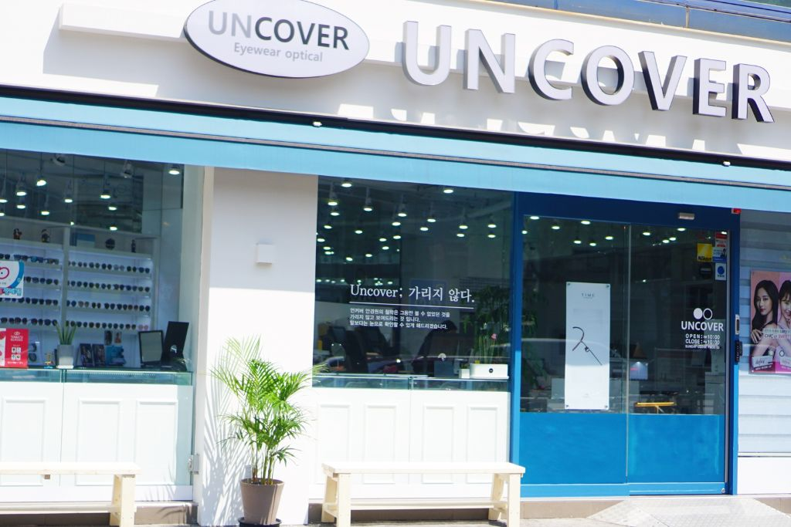

안경은 도구,
결과는 안경사의 해석
같은 검안 장비를 사용하더라도, 결과는 안경사의 해석에 따라 달라집니다.
언커버는 차이역(JND), 양안시 균형, 누진렌즈 설계, 프레임 피팅까지 모든 변수를 수치화하고 객관화하여 최적의 교정 값을 도출합니다.
이 과정을 고객님과 함께 확인하고, 이해하며, 납득하는 것이 언커버의 방식입니다.

안경은 도구입니다. 결과는 안경사의 해석에서 나옵니다.
"가리지 않고 보여드립니다"라는 의미를 담은 언커버(UNCOVER)는 단순히 안경을 판매하는 곳이 아닙니다.
고객의 시각적 불편함을 정확히 진단하고, 그 원인을 가리지 않고 투명하게 설명하며, 최적의 해결책을 함께 찾아가는 감각 설계 컨설팅 공간입니다.
우리는 "잘 보이는 안경"이 아닌 "편안하게 쓰는 안경"을 만듭니다.

발전과 공감
안주하지 않고 계속 공부하고 연구합니다. 브리핑 검사 방식도 끊임없이 수정을 거쳐 지금의 완성 단계에 이르렀습니다.
안경사 포럼, 언커버 아카데미, 주 1회 이상의 내부 교육을 통해 모든 안경사가 동일한 수준의 전문성을 유지합니다.
정보 전달이 아닌, 경험과 시각화를 통해 이해를 극대화합니다. 브리핑 검안, 누진렌즈 체험, 피팅 과정 설명 등 모든 과정이 투명하게 공유됩니다.
고객님이 직접 체험하고, 비교하며, 납득할 수 있을 때 비로소 진정한 공감이 이루어집니다.
작은 안경원에서 기준을 만드는 공간으로
같은 검안 장비를 사용하더라도, 결과는 안경사의 해석에 따라 달라집니다.
언커버는 차이역(JND), 양안시 균형, 누진렌즈 설계, 프레임 피팅까지 모든 변수를 수치화하고 객관화하여 최적의 교정 값을 도출합니다.
이 과정을 고객님과 함께 확인하고, 이해하며, 납득하는 것이 언커버의 방식입니다.
현직 안경사를 대상으로 한 교육 활동

언커버는 매년 100명 이상의 현직 안경사가 참석하는 안경사 포럼을 운영하며, 실무 중심의 임상 교육을 제공하는 언커버 아카데미를 정식 개원했습니다.
브리핑 검안, 임상 양안시, 안경렌즈 전문가 과정 등 3개월 과정의 체계적인 교육을 통해, 안경사들이 현장에서 바로 적용할 수 있는 실질적인 기준을 세우고 있습니다.
검안광학회 기고, 포럼 발표 등 학술 활동도 지속하고 있습니다.
교육 프로그램 자세히 보기전문적인 접근을 위해서는 높은 수준의 일관성이 필요합니다. 언커버는 주 1회 이상 내부 교육을 진행하여 모든 안경사가 동일한 검안 철학과 프로세스를 공유합니다.
고객님이 어느 안경사를 만나시든, 언커버만의 브리핑 검안, 체험 시스템, 피팅 철학을 경험하실 수 있습니다.